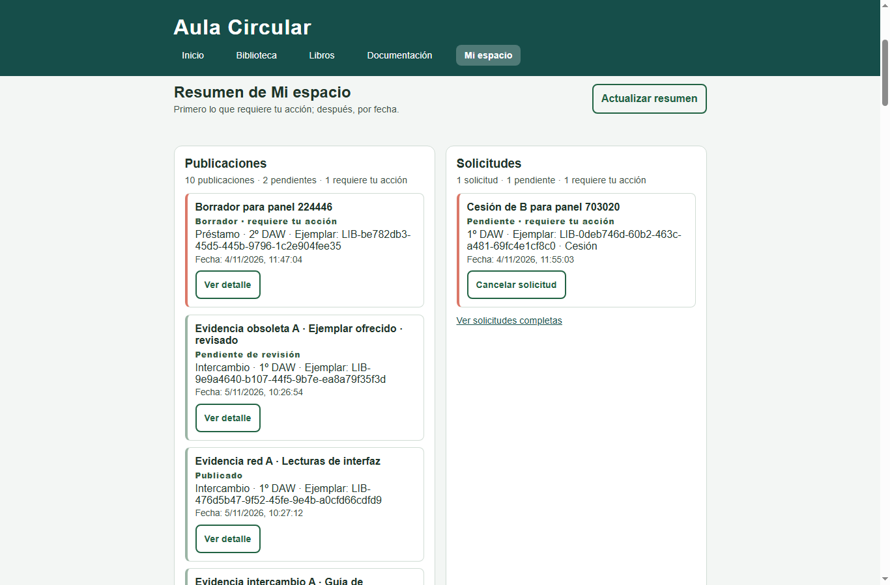
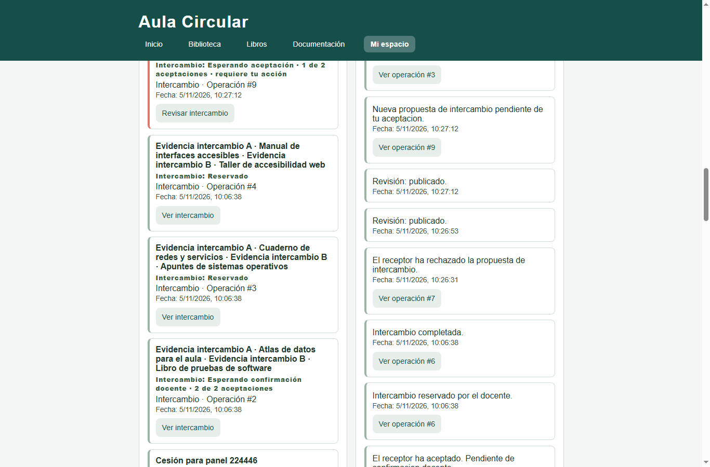
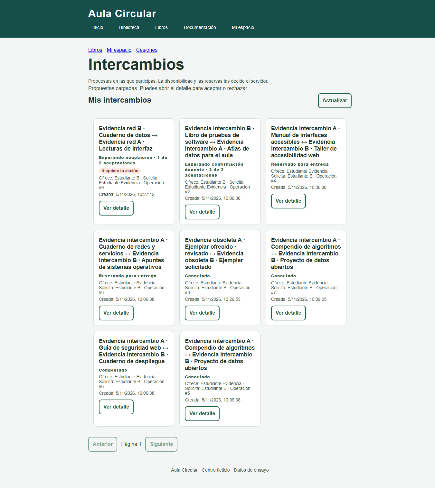
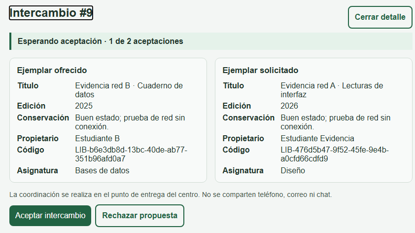
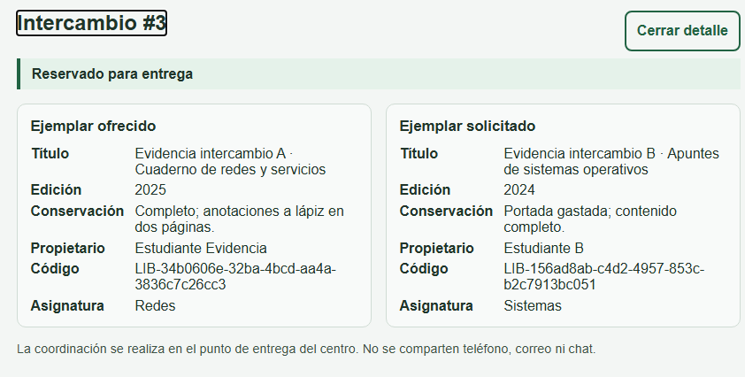
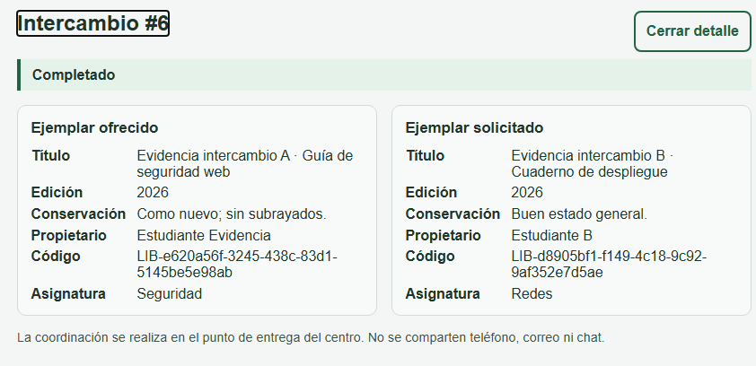
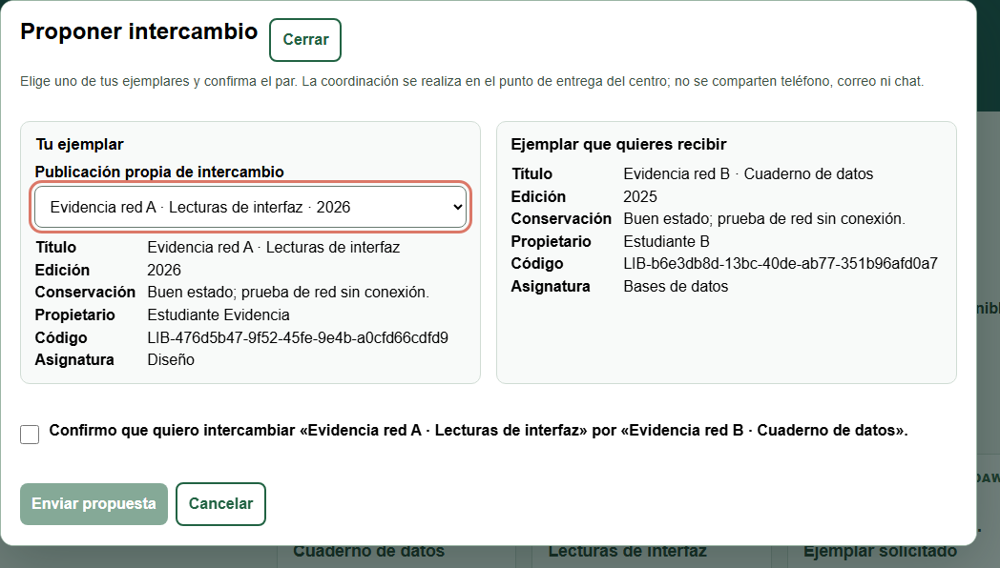
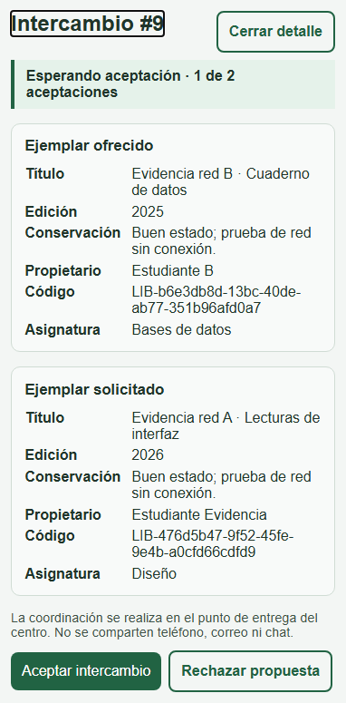
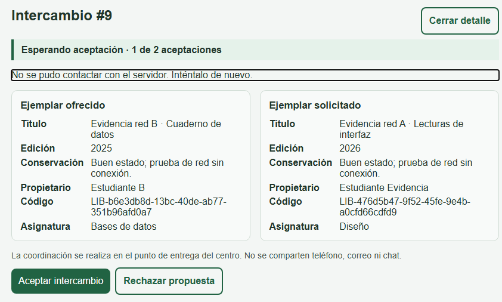
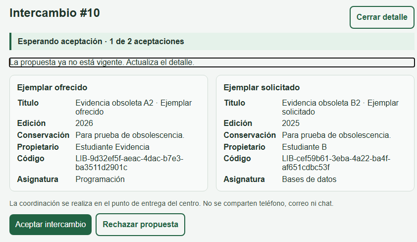

Muestra técnica de una ejecución local real. No sustituye la ficha de tarea, la rúbrica ni la validación del Team Leader.
| Documento | Evidencia local de intercambios · versión 1 · 5 de noviembre de 2026 |
|---|---|
| Versión observada | Rama interfaz-y-accesibilidad · HEAD 8884522 · cambios locales sin commit · comprobación del 5/11/2026. |
| Entorno | Windows · Node.js 26.12.0 · PostgreSQL 18.6 · Chrome 152.0.7977.83 · servidor local http://127.0.0.1:3000. La documentación del proyecto declara Node.js 24 LTS y PostgreSQL 17; la instancia usada para esta prueba no coincide en esas dos versiones. |
| Datos | Cuentas, cursos, ejemplares, anuncios e intercambios ficticios. No se incluyen correos, contraseñas, cookies, tokens ni datos personales reales. |
| Aportación | Implementación y verificación local del flujo de intercambios descrito en este documento, realizada con apoyo de IA. La aportación individual y su registro horario deben ser declarados y validados por el equipo. |
La sesión decide quién propone, quién recibe y quién puede actuar. El cliente no envía un identificador de propietario ni calcula la reserva: las rutas comprueban propiedad, pareja, versiones y estado en el servidor. La lista propia prioriza lo que requiere acción y después ordena por fecha.
| Estado representado | Operación de prueba | Observación real | Respuesta / SQL |
|---|---|---|---|
| Esperando aceptación | #9 · B propone a A | 1 de 2 aceptaciones; A ve «Aceptar» y «Rechazar»; la tarjeta pide su acción. | GET 200; propuesta; 1 aceptación; 0 reservas. |
| Esperando confirmación docente | #2 | 2 de 2 aceptaciones; el alumno ya no puede aceptar; espera la reserva docente. | GET 200; propuesta; 2 aceptaciones; 0 reservas. |
| Reservado para entrega | #3 y #4 | Docencia reservó #3 por teclado; aparecen «Confirmar entrega» y «Cancelar reserva». | POST reservar #3: 200; reservada; 2 reservas; evento reservar_intercambio. |
| Completado | #6 | La entrega quedó confirmada y el detalle deja de ofrecer acciones de reserva. | completada; sin reserva activa. |
| Cancelado | #5, #7, #8 y #10 | #7 se rechazó por teclado; #10 quedó obsoleto al editar el anuncio; #8 se canceló al editar la propuesta. | Rechazo #7: 200; aceptación obsoleta #10: 409; SQL cancelada en ambos. |
Mi espacio consulta con la sesión y reúne publicaciones, solicitudes, préstamos/intercambios y avisos. En la captura, la operación #9 aparece antes que las cerradas porque requiere la aceptación de A. Las cifras siguientes salen de dos llamadas reales a GET /api/mi-espacio/panel.


| Sección | Total A | Pendientes A | Requieren acción A | Total B |
|---|---|---|---|---|
| Publicaciones | 11 | 3 | 1 | 9 |
| Solicitudes | 1 | 1 | 1 | 2 |
| Préstamos e intercambios | 10 | 5 | 1 | 10 |
| Avisos | 22 | 0 | 0 | 22 |
HTTP 200 en A y B. Totales del panel completo; las listas admiten limite entre 1 y 20. Cuentas ficticias, sin correos.
La cuenta A ve solo sus intercambios. La primera tarjeta es la propuesta #9, pendiente de su aceptación; después aparecen las operaciones en curso y las cerradas. Cada tarjeta muestra ambos títulos, los alias de los propietarios y el estado; el detalle añade edición, conservación y acciones permitidas por el servidor.

intercambios.html. Se observan las cinco situaciones: esperando aceptación (#9), esperando docente (#2), reservado (#3/#4), completado (#6) y cancelado (#5/#7/#8). La propuesta que requiere acción va primera.| Comprobación | Esperado | Observado |
|---|---|---|
| Datos propios | Solo operaciones de A | La lista de A contiene #2–#9; la lista docente contiene las 9 operaciones y se obtuvo con HTTP 200. |
| Prioridad | Primero requiere_accion; después pendiente y fecha | #9 ocupa la primera posición; #2 y #3 aparecen antes que las canceladas y la completada. |
| Contenido de la tarjeta | Ambos ejemplares, edición, conservación y alias | El detalle de #9 muestra «Evidencia red B · Cuaderno de datos» (2025) y «Evidencia red A · Lecturas de interfaz» (2026), con «Estudiante B» y «Estudiante Evidencia». |
El detalle presenta dos tarjetas ordenadas, una por ejemplar, con edición, conservación, propietario y código. La propuesta exige elegir un ejemplar propio y marcar la confirmación explícita; no se envía nada en la captura del diálogo.





| Prueba | Entrada | Esperado | Observado |
|---|---|---|---|
| Aceptación | Abrir #2, enfocar «Aceptar» y pulsar Enter. | Registrar la aceptación y volver a un control coherente. | 2 de 2 aceptaciones; mensaje «Aceptación registrada. Pendiente de confirmación docente.»; foco en cerrar-detalle. |
| Rechazo | Abrir #7 como receptora, «Rechazar» y Enter; aceptar el confirm. | Cancelar en servidor, sin reserva. | HTTP 200; cancelada; 0 reservas; 1 evento rechazar_intercambio; foco en cerrar-detalle. |
| Obsoleta | Abrir #10, editar el anuncio ofrecido y pulsar «Aceptar» con la versión anterior. | 409, explicar que hay que actualizar y no reservar. | HTTP 409; «La propuesta ya no está vigente. Actualiza el detalle.»; SQL cancelada; 1 aceptación inicial; 0 reservas. |
| Red caída | Abrir #9, desconectar la red del navegador y pulsar «Aceptar». | No cambiar estado ni reservar; mensaje comprensible y foco en el mensaje. | «No se pudo contactar con el servidor. Inténtalo de nuevo.»; sigue propuesta con 1 aceptación; 0 eventos de aceptar; 0 reservas. |
| Docencia | Abrir #3 como docencia, enfocar «Reservar» y pulsar Enter. | Reservar y ofrecer las acciones docentes; al cerrar, foco coherente. | HTTP 200; reservada; 2 reservas; evento reservar_intercambio; foco en «actualizar» al cerrar. |


| Aportación | Implementación y verificación local del backend de intercambios, la página intercambios.html, el diálogo de propuesta y las pruebas descritas. La aportación individual debe ser confirmada por la persona responsable y el Team Leader. |
|---|---|
| Ayuda de IA | Sí: revisión del contrato, propuesta de pruebas CDP, localización de fallos y redacción de esta evidencia. Las decisiones de producto y la validación final corresponden al equipo. |
| Revisión real | Suite automática local: 24/24 pruebas en verde contra PostgreSQL 18.6 y HTTP real; comprobaciones manuales de teclado y SQL. Revisión del Team Leader: no consta; queda pendiente. |
evidencias/intercambios-datos.json, la salida de la suite en evidencias/pruebas.txt y el contrato en docs/Sprint4-INTERCAMBIOS.md. Este documento no valida la tarea.